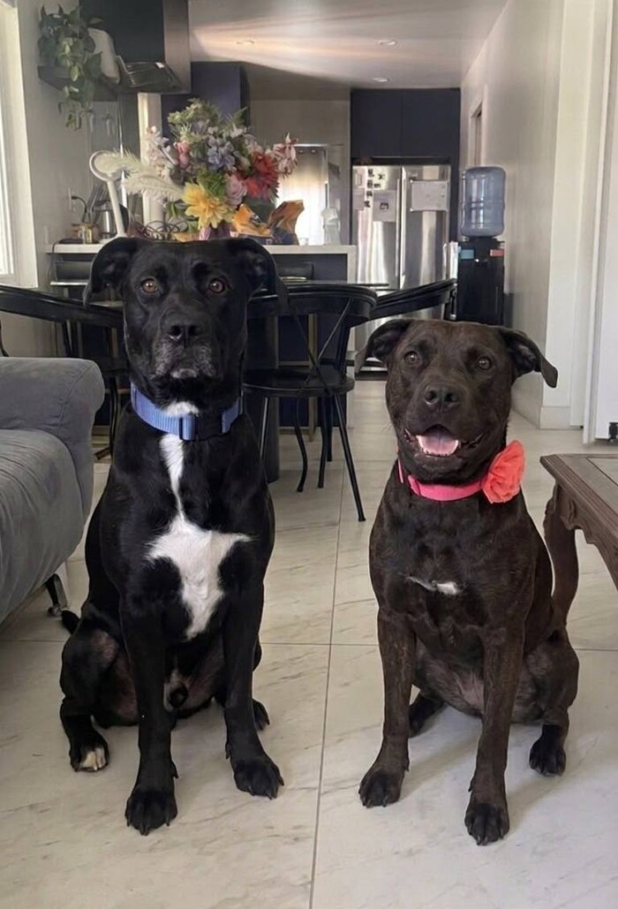

Helping more pets find their way home
AdoptScout is a free, independent search tool that brings adoptable pets from shelters and rescues across the country into one simple, friendly place to browse.
Why AdoptScout exists
Every year, thousands of adoptable dogs, cats, rabbits, and birds sit in shelters that each run their own small website — or none at all — making it hard for anyone to see the full picture of who's actually available nearby. AdoptScout pulls listings from RescueGroups.org, which aggregates real-time data from thousands of independent shelters and rescue groups nationwide, and presents it in one clean, fast, ad-free search experience — so finding a new best friend takes minutes, not hours of hopping between different shelter sites.
What you can do here
- Search real, live shelter listings nationwide by species, breed, age, gender, and size
- Get a "near you" view automatically, based on your browser's own location
- Save favorites right in your browser — no account or sign-up required
- See pets flagged as urgently needing a home front and center
- Reach out directly to the shelter or rescue that actually has the pet
A note on the data
AdoptScout is an independent project and is not affiliated with or endorsed by RescueGroups.org. All pet and shelter information shown here comes directly from RescueGroups.org's public API and reflects what each individual shelter has listed — if something looks out of date, the shelter's own listing is the source of truth, and their contact info is always one click away on every pet's page.
About the creator
AdoptScout was designed and built by Jose Lopez Jr as a personal project exploring how a small, focused tool can make it a little easier to connect people with animals that need homes.
Connect on LinkedIn →
Why this matters to me
This project is personal. A couple of years ago I adopted Ronnie (on the right), an 11-year-old senior black Lab mix, from the Downey shelter — senior dogs are so often the last ones anyone notices, and he's turned out to be one of the best decisions I've made.
I'm currently also fostering Oreo (on the left), a 5-year-old black Lab mix also from Downey, through Concerned Citizens Rescue. Building AdoptScout is my way of trying to make it a little easier for more dogs like them to find someone willing to say yes.